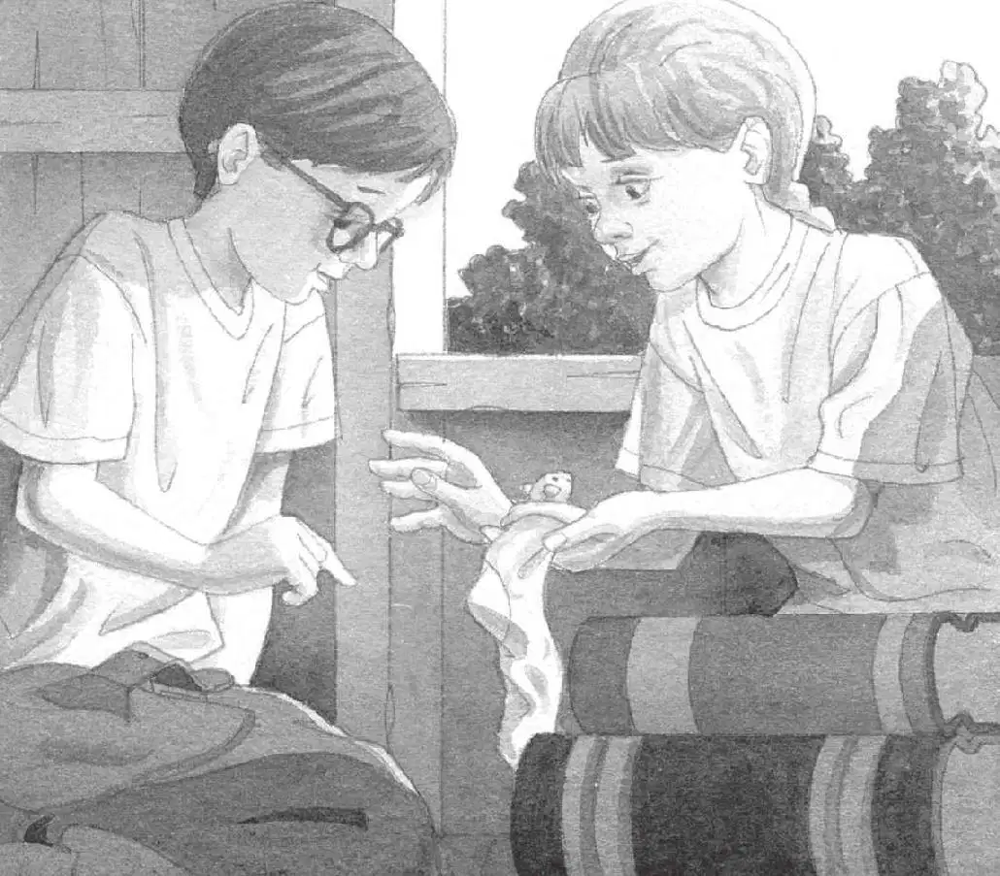

“快点儿啊，杰克！”安妮喊道。
安妮跑进了蛙溪树林。
杰克紧跟在她后面。
“树屋还在呢！”安妮大声说。
杰克追上了安妮。安妮站在一棵高大的橡树旁。
杰克往上看去。那座神奇的树屋在午后的阳光里闪闪发光。
“我们来啦，花生米！”安妮呼唤道。
她抓住绳梯，开始往上爬。
杰克也跟了上去。他们爬啊爬啊，终于爬进了树屋。
“花生米，你在吗？”安妮问。
杰克放下背包，打量着四周。
阳光斜斜地照在一大摞书上——关于忍者、海盗、木乃伊、城堡和骑士及恐龙的书。
木地板上，字母M闪着微光。M代表的是仙女摩根。
“我觉得花生米不在这儿。”杰克说。
“不知道这小丫头跑到哪儿去了。”安妮说。
“你怎么知道花生米是小丫头？”杰克问道。
“我就是知道。”安妮回答。
“噢，真是服了你。”杰克说道。
“吱吱！”
安妮笑了起来。“快看，杰克！”
一只粉红色的小袜子在地板上移动着。昨天，安妮用自己的袜子给小老鼠做了一张床。
安妮把这个小鼓包从地上捡了起来。
“吱吱。”
一只有着褐白相间皮毛的老鼠从袜子里探出了脑袋。它忽闪着一双大眼睛看看安妮，又看看杰克。
杰克笑出了声。“你好啊，花生米。”他说。
“你今天还会帮助我们吗？”安妮问。
在古代日本的历险中，小老鼠曾在杰克和安妮横渡小溪的时候帮助过他们。
“我们还要为仙女摩根再找到三样东西。”安妮说。
杰克把眼镜往上推了推。“首先，我们必须找到一条线索，然后才能知道从哪儿开始。”他说。

“猜猜我看到什么了？”安妮说。
“什么？”杰克问道。
“我们用不着东找西找了。”安妮指着树屋的一个角落。
阴影里有一本打开的书。